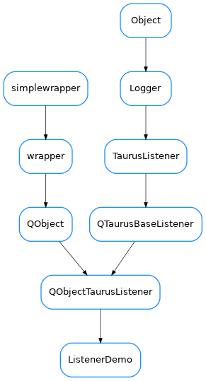

ListenerDemo¶

-
class
ListenerDemo(name=None, parent=None)[source]¶ Bases:
taurus.qt.qtcore.taurusqlistener.QObjectTaurusListener-
eventReceived(evt_src, evt_type, evt_value)[source]¶ The basic implementation of the event handling chain is as follows:
eventReceived just calls
fireEvent()which emits a “taurusEvent” PyQt signal that is connected (bypreAttach()) to thefilterEvent()method.After filtering,
handleEvent()is invoked with the resulting filtered event
Note
in the earlier steps of the chain (i.e., in
eventReceived()/fireEvent()), the code is executed in a Python thread, while from eventFilter ahead, the code is executed in a Qt thread. When writing widgets, one should normally work on the Qt thread (i.e. reimplementinghandleEvent())
-